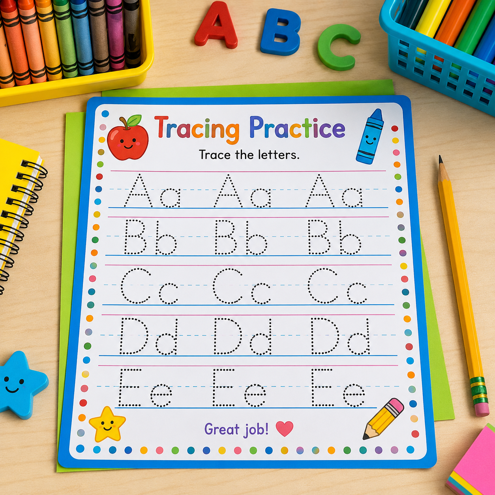

Pre-Writing Lines
Build control with horizontal, vertical, diagonal, curved, and zigzag tracing paths.
- Straight lines
- Curved paths
- Zigzags
- Pencil control practice
Practice lines, shapes, letters, and early handwriting skills while strengthening pencil control, visual coordination, and confidence.

Tracing can support fine motor development when children are ready and interested. For infants and young toddlers, focus first on grasping, reaching, manipulating objects, scribbling, drawing, and other hands-on experiences rather than expecting formal handwriting skills.
Start with the level that matches the child's current development. Pre-writing movements and simple shapes can provide a foundation before children are ready for formal letter formation.
Build control with horizontal, vertical, diagonal, curved, and zigzag tracing paths.
Practice tracing simple shapes while developing visual-motor coordination and hand control.
Practice letter paths when children are ready to connect fine motor control with early writing.
Combine tracing with playful hand-strengthening and coordination activities.
Choose a practice type and select the activities you want to include.
No practice activities selected.
If you need a different tracing level, letter set, shape collection, line style, or classroom format, use your resource request process to tell us what would be more useful.
Fine motor development happens through repeated opportunities to move, grasp, draw, manipulate, and explore. Tracing is one tool within that larger learning process.
Let children make large movements with their arms before asking them to control a pencil on a small page.
Lines, curves, loops, and simple paths help children experience directional movement without the pressure of letter writing.
Use crayons, markers, chalk, sensory materials, easels, and other tools to give children multiple ways to practice.
Introduce letter formation when children show interest and developmental readiness rather than treating handwriting as a one-size-fits-all expectation.
Explore alphabet activities, beginning sounds, literacy centers, classroom signs, and other practical resources for early learning.
Explore Literacy Printables →